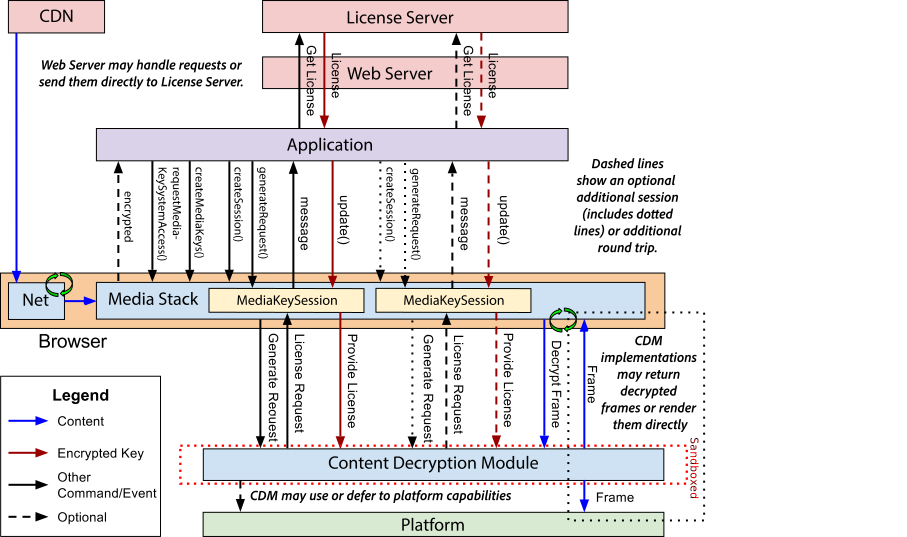

Encrypted Media Extensions
W3C Editor's Draft 1 April 2014
- This Version:
- http://dvcs.w3.org/hg/html-media/raw-file/default/encrypted-media/encrypted-media.html
- Latest Published Version:
- http://www.w3.org/TR/encrypted-media/
- Latest editor's draft:
- http://dvcs.w3.org/hg/html-media/raw-file/default/encrypted-media/encrypted-media.html
- Previous Versions:
- http://www.w3.org/TR/2014/WD-encrypted-media-20140218/
- http://www.w3.org/TR/2013/WD-encrypted-media-20130510/
- http://www.w3.org/TR/2013/WD-encrypted-media-20131022/
- Editors:
- David Dorwin, Google, Inc.
- Adrian Bateman, Microsoft Corporation
- Mark Watson, Netflix, Inc.
- Bug/Issue lists:
-
Bugzilla, Tracker
- Discussion list:
- public-html-media@w3.org
- Test Suite:
- None yet
Copyright © 2014 W3C® (MIT, ERCIM, Keio, Beihang), All Rights Reserved. W3C liability, trademark and document use rules apply.
Abstract
This proposal extends HTMLMediaElement providing APIs to control playback of protected content.
The API supports use cases ranging from simple clear key decryption to high value video (given an appropriate user agent implementation).
License/key exchange is controlled by the application, facilitating the development of robust playback applications supporting a range of content decryption and protection technologies.
This specification does not define a content protection or Digital Rights Management system. Rather, it defines a common API that may be used to discover, select and interact with
such systems as well as with simpler content encryption systems. Implementation of Digital Rights Management is not required for compliance with this specification: only the simple
clear key system is required to be implemented as a common baseline.
The common API supports a simple set of content encryption capabilities, leaving application functions such as authentication and authorization to page authors. This is achieved by
requiring content protection system-specific messaging to be mediated by the page rather than assuming out-of-band communication between the encryption system and a license
or other server.
Status of This Document
This section describes the status of this document at the time of its publication. Other documents may supersede this document.
A list of current W3C publications and the latest revision of this technical report can be found in the
W3C technical reports index at http://www.w3.org/TR/.
Implementers should be aware that this specification is not stable. Implementers who are not taking part in the discussions are likely to find the specification changing out from under them in incompatible ways. Vendors interested in implementing this specification before it eventually reaches the Candidate Recommendation stage should join the mailing list mentioned below and take part in the discussions.
This document was published by the HTML working group as an Editor's Draft.
Please submit comments regarding this document by using the W3C's (public bug database) with the product set to HTML WG and the component set to
Encrypted Media Extensions.
If you cannot access the bug database, submit comments to public-html-media@w3.org
(subscribe,
archives) and arrangements will be made to transpose the comments to the bug database.
All feedback is welcome.
Publication as an Editor's Draft does not imply endorsement by the W3C Membership. This is a draft document and may be updated,
replaced or obsoleted by other documents at any time. It is inappropriate to cite this document as other than work in progress.
Note: It is an open issue whether and how the spec should do more to encourage/ensure CDM-level interop. See Bug 20944.
Note: This specification contains sections for describing security and privacy considerations. These sections are not final and review is welcome.
This document was produced by a group operating under the 5 February 2004 W3C Patent Policy.
W3C maintains a public list of any patent disclosures made in connection with
the deliverables of the group; that page also includes instructions for disclosing a patent. An individual who has actual knowledge of a patent which
the individual believes contains Essential Claim(s) must disclose the
information in accordance with section 6 of the W3C Patent Policy.
Table of Contents
1. Introduction
This section is non-normative.
This proposal allows JavaScript to select content protection mechanisms, control license/key exchange, and implement custom license management algorithms.
It supports a wide range of use cases without requiring client-side modifications in each user agent for each use case.
This also enables content providers to develop a single application solution for all devices.
A generic stack implemented using the proposed APIs is shown below.
This diagram shows an example flow: other combinations of API calls and events are possible.

1.1. Definitions
Text in this font and color is non-normative.
1.1.1. Content Decryption Module (CDM)
This section is non-normative.
The Content Decryption Module (CDM) is a generic term for a part of or add-on to the user agent that provides functionality for one or more Key Systems.
Implementations may or may not separate the implementations of CDMs and may or may not treat them as separate from the user agent.
This is transparent to the API and application.
A user agent may support one or more CDMs.
1.1.2. Key System
A Key System is a generic term for a decryption mechanism and/or content protection provider.
Key System strings provide unique identification of a Key System.
They are used by the user agent to select the Content Decryption Modules and identify the source of a key-related event.
Simple Decryption Key Systems are supported by all user agents. User agents may also provide additional CDMs with corresponding Key System strings.
A Key System string is always a reverse domain name. For example, "com.example.somesystem".
Key System strings are compared using case-sensitive matching. It is recommended that CDMs use simple lower-case ASCII key system strings.
Within a given system ("somesystem" in the example), subsystems may be defined as determined by the key system provider.
For example, "com.example.somesystem.1" and "com.example.somesystem.1_5".
Key System providers should keep in mind that these will be used for comparison and discovery, so they should be easy to compare and the structure should remain reasonably simple.
1.1.3. Key Session
A Key Session, or simply Session, represents the lifetime of the license(s)/key(s) it contains and associates all messages related to them.
Sessions are embodied as MediaKeySession objects.
Each Key session is associated with a single instance of Initialization Data provided in the createSession() call.
Each Key Session is associated with a single MediaKeys object, and only media elements associated with that object may access key(s) associated with the session.
Other MediaKeys objects, CDM instances, and media elements may not access the key session or use its key(s).
Key sessions and the keys they contain are no longer usable by the CDM for decryption when the session is closed, including when the MediaKeySession object is destroyed.
1.1.4. Session ID
A Session ID is a unique string identifier generated by the user agent or CDM that can be used by the application to identify MediaKeySession objects.
(The underlying content protection client or server do not necessarily need to support Session IDs.)
A new Session ID is generated each time the user agent successfully initializes a MediaKeySession object.
It must be valid before the MediaKeySession enters the PENDING or READY states and the user agent fires the associated events.
Each Session ID shall be unique within the browsing context in which it was created.
(Note: Some use cases may require that Session IDs be unique within the origin over time, including across browsing sessions.)
1.1.5. Initialization Data
This section is non-normative.
Initialization Data is a generic term for container-specific data that is used by Content Decryption Modules to generate a license request.
It should always allow unique identification of the key(s) needed to decrypt the content.
Key Systems usually require a block of initialization data containing information about the stream to be decrypted before they can construct a license request message.
This block could be a simple key or content ID or a more complex structure containing such information.
The format of the initialization data depends upon the type of container. Containers may support more than one format
of initialization data. The initialization data type is a string that indicates what
format the initialization data is provided in. Initialization data type strings are always matched case-sensitively. It is
recommended that initialization data type strings are lower-case ASCII strings.
The Encrypted Media Extensions Stream Format and Initialization Data Format Registry
provides the mapping from initialization data type string to the specification for each format.
This initialization information may be obtained in some application-specific way or provided with the media data.
Initialization data found with the media data is provided to the application in the initData attribute of the needkey event.
1.1.6. Cross Origin Support
During playback, embedded media data is exposed to script in the embedding origin. In order for the API to fire needkey
and message events, media data must be CORS-same-origin with the embedding page.
If media data is cross-origin with the embedding document, authors should use the crossorigin attribute
on the media element and CORS headers on the media data response to make it CORS-same-origin.
2. Media Element Extensions
We extend media element to allow decryption key acquisition to be handled in JavaScript.
enum MediaWaitingFor { "none", "data", "key" };
partial interface HTMLMediaElement {
// Encrypted Media
readonly attribute MediaKeys mediaKeys;
void setMediaKeys(MediaKeys mediaKeys);
attribute EventHandler onneedkey;
readonly attribute MediaWaitingFor waitingFor;
};
[Constructor(DOMString keySystem)]
interface MediaKeys {
readonly attribute DOMString keySystem;
MediaKeySession createSession(DOMString initDataType, Uint8Array initData);
MediaKeySession loadSession(DOMString sessionId);
static bool isTypeSupported(DOMstring keySystem, optional DOMString contentType);
};
interface MediaKeySession : EventTarget {
// error state
readonly attribute MediaKeyError? error;
// session properties
readonly attribute DOMString keySystem;
readonly attribute DOMString sessionId;
// session operations
void update(Uint8Array response);
void release();
};
partial interface HTMLSourceElement {
attribute DOMString keySystem;
};
The mediaKeys attribute is the MediaKeys being used when decrypting encrypted media data for this media element.
The setMediaKeys(mediaKeys method provides the MediaKeys to use. When calling this method, the media element must run the following steps:
If the MediaKeys object is already in use and the user agent is unable to re-use it with this element, throw a QUOTA_EXCEEDED_ERR exception and abort these steps.
- Set the
mediaKeys attribute of the media element to mediaKeys.
Note: As a best practice, applications should create a MediaKeys object and call setMediaKeys() before providing media data (for example, setting the src attribute of the media element). This avoids potential delays in some implementations.
Note: In some implementations, MediaKeySession objects created by createSession() may not fire any events until the MediaKeys object is associated with a media element with setMediaKeys().
The onneedkey event handler for the needkey event must be supported by all HTMLMediaElements as both a content attribute and an IDL attribute.
The waitingFor attribute indicates what the media element is waiting for, if anything (indicated by the waiting and canplay events). This is described in the Encrypted Block Encountered algorithm.
The MediaKeys(keySystem) constructor must run the following steps:
If keySystem is an empty string, throw an INVALID_ACCESS_ERR exception and abort these steps.
If keySystem is not one of the user agent's supported Key Systems, throw a NOT_SUPPORTED_ERR and abort these steps. Key system string comparison is case-sensitive.
- Create a new
MediaKeys object.
Set the keySystem attribute to keySystem.
-
Schedule a task to execute the following steps:
Let cdm be the content decryption module corresponding to keySystem.
Load and initialize the cdm if necessary.
If cdm fails to load or initialize, save the appropriate error name and system code internally with the MediaKeys instance being created.
This will be used to fire an error against the first session created for this instance.
If no system code is provided, use 0.
- Return the new
MediaKeys object to the caller.
The keySystem attribute identifies the Key System being used.
The createSession(initDataType, initData) method must run the following steps:
Note: The contents of initData are container-specific Initialization Data.
initDataType is the initialization data type that indicates how to interpret initData.
Note: User agents and CDMs should not treat sessions created with audio data differently than those created with video data.
That is, there is no such thing as an "audio session" or a "video session" - all sessions are used for all media streams processed by cdm.
If initDataType is an empty string, throw an INVALID_ACCESS_ERR exception and abort these steps.
If initData is null or an empty array, throw an INVALID_ACCESS_ERR exception and abort these steps.
If initDataType contains an invalid or unrecognized initialization data type, throw a NOT_SUPPORTED_ERR exception and abort these steps.
If the content decryption module corresponding to the keySystem attribute does not support the Initialization Data format initDataType, throw a NOT_SUPPORTED_ERR exception and abort these steps.
- Let session be a new
MediaKeySession object, and initialize it as follows:
Set the error attribute to null.
Set the keySystem attribute to the value of the MediaKeys object's keySystem attribute.
Set the sessionId attribute to the empty string.
Let the state be CREATED.
-
Schedule a task to process the initData, providing session, initDataType, and initData.
The user agent will asynchronously execute the following steps in the task:
Wait for the MediaKeys constructor task to complete.
-
If error information is saved with the MediaKeys object because of an error during the MediaKeys constructor task:
Run the Queue an "error" Event algorithm on the session, providing the error name and system code that were saved with the MediaKeys object.
Clear the error information saved with the MediaKeys object.
Abort the task.
Let request be null.
Let default URL be null.
Let cdm be the cdm loaded in the MediaKeys constructor.
-
Use the cdm to execute the following steps:
Process the initData, interpreting it per initDataType.
-
If a message exchange (e.g. a license request) is required:
-
Let request be a request generated by the CDM using the initData.
cdm must not use any stream-specific data, including media data, not provided via the initData.
Note: request may be a request for multiple keys, depending on the keySystem and/or the initData. This is transparent to the application.
If the initData indicates a default URL relevant to keySystem, let default URL be that URL.
Set the session's sessionId attribute to a unique Session ID string. It may be obtained from cdm.
-
If any of the preceding steps in the task failed, run the following steps:
Run the Queue an "error" Event algorithm on the session, providing the appropriate error name and system code value, if provided, and 0 otherwise.
Abort the task.
-
If the associated media element(s) are waiting for a key, queue a task to attempt to resume playback.
In other words, resume playback if the necessary key is provided.
The user agent may choose to skip this step if it knows resuming will fail (i.e. no usable key was added).
-
Follow the steps for the first matching condition from the following list:
- If request is not null
-
Run the Queue a "message" Event algorithm on the session, providing request and default URL.
- Otherwise
-
Let the state of the session be READY.
-
Queue a task to fire a simple event named ready at the session.
Note: this step makes it possible for a MediaKeySession to transition from the CREATED state to the READY state.
User agents might do this as an optimization but, even if this is done, all MediaKeySession instances must appear distinct regardless of the underlying implementation.
-
Return the new object to the caller.
Note: User agents should always fire an event at the returned object in response to this call.
For some implementations, it is possible - especially the first time a Key System is used - that the first event will be delayed significantly while the client is initialized, the user responds to permission requests, etc.
Applications should expect and handle such delays.
The loadSession(sessionId) method must run the following steps:
If the content decryption module corresponding to the keySystem attribute does not support loading previous sessions, throw a NOT_SUPPORTED_ERR exception and abort these steps.
If sessionId is an empty string, throw an INVALID_ACCESS_ERR exception and abort these steps.
- Let session be a new
MediaKeySession object, and initialize it as follows:
Set the error attribute to null.
Set the keySystem attribute to the value of the MediaKeys object's keySystem attribute.
Set the sessionId attribute to the empty string.
Let the state be CREATED.
-
Schedule a task to load the session, providing session and sessionId.
The user agent will asynchronously execute the following steps in the task:
Wait for the MediaKeys constructor task to complete.
-
If error information is saved with the MediaKeys object because of an error during the MediaKeys constructor task:
Run the Queue an "error" Event algorithm on the session, providing the error name and system code that were saved with the MediaKeys object.
Clear the error information saved with the MediaKeys object.
Abort the task.
Let request be null.
Let destination URL be null.
Let origin be the origin of the MediaKeys object's Document.
Let cdm be the cdm loaded in the MediaKeys constructor.
-
Use the cdm to execute the following steps:
-
If there is no data stored for the sessionId in the origin, run the following steps:
Run the Queue an "error" Event algorithm on the session, "NotFoundError" and 0.
Abort the task.
Let session data be the data stored for the sessionId in the origin.
This must not include data from other origin(s) or that is not associated with an origin.
Load the session data and associate it with the session.
-
If a message exchange is required:
Let request be a request generated by the CDM based on the session data.
If the session data indicates a destination URL for the request, let destination URL be that URL.
Set the session's sessionId attribute to sessionId
-
If any of the preceding steps in the task failed, run the following steps:
Run the Queue an "error" Event algorithm on the session, providing the appropriate error name and system code value, if provided, and 0 otherwise.
Abort the task.
-
If the associated media element(s) are waiting for a key, queue a task to attempt to resume playback.
In other words, resume playback if the necessary key is provided.
The user agent may choose to skip this step if it knows resuming will fail (i.e. no usable key was added).
-
Follow the steps for the first matching condition from the following list:
- If request is not null
-
Run the Queue a "message" Event algorithm on the session, providing request and destination URL.
- Otherwise
-
Let the state of the session be READY.
Queue a task to fire a simple event named ready at the session.
Return the new object to the caller.
The isTypeSupported(keySystem, contentType) method returns whether keySystem is supported with the container and codec(s) specified by contentType.
The following list shows some examples.
- Returns whether the Some System Key System is supported. Specific containers and codecs may or may not be supported with Some System.
MediaKeys.isTypeSupported("com.example.somesystem")- Returns whether the Some System Key System is present and supports the container and codec(s) specified by mimeType.
MediaKeys.isTypeSupported("com.example.somesystem", mimeType)- Returns whether the user agent supports Clear Key Simple Decryption of the container and codec(s) specified by mimeType.
MediaKeys.isTypeSupported("org.w3.clearkey", mimeType)
It must run the following steps:
If keySystem is an empty string, return false and abort these steps.
If keySystem contains an unrecognized or unsupported Key System, return false and abort these steps. Key system string comparison is case-sensitive.
If contentType was not provided or is an empty string, return true and abort these steps.
If contentType contains an invalid or unrecognized MIME type, return false and abort these steps.
-
Issue 5
isTypeSupported needs to be updated including using initDataType. This includes the discussion in Bug 24873.
Let initDataFormat be the container type specified by contentType.
If the user agent does not support the Initialization Data format initDataFormat, return false and abort these steps.
If the CDM specified by keySystem does not support the Initialization Data format initDataFormat, return false and abort these steps.
If neither the CDM specified by keySystem nor the user agent support all codec(s) specified by contentType, return false and abort these steps.
Return true.
The error attribute is a MediaKeyError representing the current error state of the session. It is null if there is no error.
The keySystem attribute identifies the Key System of the MediaKeys that created the session.
The sessionId attribute is the Session ID for this object and the associated key(s) or license(s).
The update(response) method must run the following steps:
Note: The contents of response are keySystem-specific.
If response is null or an empty array, throw an INVALID_ACCESS_ERR exception and abort these steps.
If the session is not in the PENDING state, throw an INVALID_STATE_ERR.
-
Schedule a task to handle the call, providing response.
The user agent will asynchronously execute the following steps in the task:
Let cdm be the cdm loaded in the MediaKeys constructor.
Let request be null.
-
Use the cdm to execute the following steps:
-
Process response.
Note: When response contains key(s) and/or related data, cdm will likely cache the key and related data indexed by key ID.
Note: The replacement algorithm within a session is Key System-dependent.
Note: Keys from different sessions should be cached independently such that closing one session does not affect keys in other sessions, even if they have overlapping key IDs.
Note: It is recommended that CDMs support a standard and reasonably high minimum number of keys per MediaKeySession object, including a standard replacement algorithm, and a standard and reasonably high minimum number of MediaKeySession objects.
This enables a reasonable number of key rotation algorithms to be implemented across user agents and may reduce the likelihood of playback interruptions in use cases that involve various streams in the same element (i.e. adaptive streams, various audio and video tracks) using different keys.
If another message needs to be sent to the server, let request be that message.
-
If any of the preceding steps in the task failed, run the following steps:
Run the Queue an "error" Event algorithm on this object, providing the appropriate error name and system code value, if provided, and 0 otherwise.
Abort the task.
-
If the associated media element(s) are waiting for a key, queue a task to attempt to resume playback.
In other words, resume playback if the necessary key is provided.
The user agent may choose to skip this step if it knows resuming will fail (i.e. no usable key was added).
-
Follow the steps for the first matching condition from the following list:
- If request is not null
-
Run the Queue a "message" Event algorithm on this object, providing request and null.
- Otherwise
-
Let the state of this object be READY.
Queue a task to fire a simple event named ready at this object.
The release() method allows an application to indicate to the system that it may release any resources associated with this object. It must run the following steps:
If the state of this object is CLOSED then abort these steps.
If the state of this object is ERROR, throw an INVALID_STATE_ERR exception and abort these steps.
-
Schedule a task to handle the call.
The user agent will asynchronously execute the following steps in the task:
Let cdm be the cdm loaded in the MediaKeys constructor.
-
Use the cdm to execute the following steps:
-
Process the release request.
Note: the release() method is intended to act as a hint to the user agent that the application believes the session is no longer needed.
However, the CDM determines whether resources can now be released.
If the previous step caused the session to be closed, run the Session Close algorithm on this object.
The keySystem attribute of HTMLSourceElement specifies the Key System to be used with the media resource. The keySystem attribute must be supported by all HTMLSourceElement as both an IDL attribute and also a content attribute named keysystem.
The resource selection algorithm is modified to check the keySystem attribute after the existing step 5 of the Otherwise branch of step 6:
⌛ If candidate has a keySystem attribute whose value represents a Key System that the user agent knows it cannot use with type, then end the synchronous section, and jump down to the failed step below.
2.1. Errors
[Constructor(DOMString name, unsigned long systemCode, optional DOMString message = "")]
interface MediaKeyError : DOMError {
readonly attribute unsigned long systemCode;
};
The MediaKeys(keySystem) constructor must return a new MediaKeyError whose systemCode attribute is initialized to systemCode and inherited attributes are initialized by passing name and message to the DOMError constructor.
The systemCode attribute of a MediaKeySession object is a Key System-specific value for the error that occurred.
This allows a more granular status to be returned than the more general name.
It should be 0 if there is no associated status code or such status codes are not supported by the Key System.
The error names table below lists all the allowed error names for the name attribute along with a description.
In addition, any of the standard error names are allowed.
Issue 1
Bug 21798 - The additional error names are yet to be defined.
2.2 MediaKeySession States
This section and its subsections are non-normative.
Each MediaKeySession maintains an internal state that determines what events may be fired.
2.2.1 MediaKeySession State Definitions
The following table describes the possible states:
2.2.2 MediaKeySession State Transitions
The following diagram shows the possible state transitions and the events fired when changing state:

This section is non-normative.
Media data processed by a CDM may not be available through Javascript APIs in the usual way (for example using the CanvasRenderingContext2D drawImage() method and the AudioContext MediaElementAudioSourceNode).
This specification does not define conditions for such non-availability of media data, however, if media data is not available to Javascript APIs then these APIs may behave as if no media data was present at all.
Where media rendering is not performed by the UA, for example in the case of a hardware protected media pipeline, then the full set of HTML rendering capabilities, for example CSS Transforms, may not be available. One likely restriction is that
video media may be constrained to appear only in rectangular regions with sides parallel to the edges of the window and with normal orientation.
3. Events
3.1. Event Definitions
[Constructor(DOMString type, optional MediaKeyNeededEventInit eventInitDict)]
interface MediaKeyNeededEvent : Event {
readonly attribute DOMString initDataType;
readonly attribute Uint8Array? initData;
};
dictionary MediaKeyNeededEventInit : EventInit {
DOMString initDataType;
Uint8Array? initData;
};
[Constructor(DOMString type, optional MediaKeyMessageEventInit eventInitDict)]
interface MediaKeyMessageEvent : Event {
readonly attribute Uint8Array message;
readonly attribute DOMString? destinationURL;
};
dictionary MediaKeyMessageEventInit : EventInit {
Uint8Array message;
DOMString? destinationURL;
};
-
event .
initDataType
-
Returns a string indicating the initialization data type of the Initialization Data related to the event.
-
event .
initData
-
Returns the Initialization Data related to the event.
-
event .
message
-
Returns the message (i.e. license request) to send.
-
event .
destinationURL
-
Returns the URL to send the message to.
The initDataType attribute contains a string indicating the initialization data type specific to the event. The format of the initData will vary according to the initDataType.
The initData attribute contains Initialization Data specific to the event.
The message attribute contains a message from the CDM. Messages are Key System-specific. In most cases, it should be sent to a key server.
The destinationURL is the URL to send the message to.
An application may override this.
In some cases, it may have been provided by the media data.
It may be null.
3.2. Event Summary
This section is non-normative.
The following event is fired at HTMLMediaElement.
| Event name |
Interface |
Dispatched when... |
Preconditions |
needkey |
MediaKeyNeededEvent |
The user agent needs a key or license to begin or continue playback.
It may have encountered media data that may/does require decryption to load or play OR need a new key/license to continue playback.
|
readyState is equal to HAVE_METADATA or greater.
It is possible that the element is playing or has played.
|
The following events are fired at MediaKeySession.
| Event name |
Interface |
Dispatched when... |
Preconditions |
error |
Event |
An error occurs in the session. The session moves to the ERROR state. |
|
message |
MediaKeyMessageEvent |
A message has been generated (and likely needs to be sent to a server).
For example, a license request has been generated as the result of a createSession() call or another message must be sent in response to an update() call.
The session moves to the PENDING state.
|
|
ready |
Event |
The CDM currently has all the information it needs to use keys/licenses from this session. The session moves to the READY state.
|
|
close |
Event |
The session is no longer needed. The session moves to the CLOSED state.
|
|
4. Algorithms
4.1. Initialization Data Encountered
The following steps are run when the media element encounters a source that may contain encrypted blocks or streams during the resource fetch algorithm:
Let initData be null.
If Initialization Data was encountered and if the media data is CORS-same-origin, let initData be that initialization data. Let initDataType be the string representing the initialization data type.
-
Queue a task to fire a simple event named needkey at the media element.
The event is of type MediaKeyNeededEvent and has:
Firing this event allows the application to begin acquiring the key process before it is needed.
Note that readyState is not changed and no algorithms are aborted. This event merely provides information.
Note that if the media is not CORS-same-origin then the initData will be null. This allows applications that can retrieve initData from an alternative source to continue. Applications with no way to retrieve initData may wish to consider aborting playback in this case.
Continue Normal Flow: Continue with the existing media element's resource fetch algorithm.
4.2. Encrypted Block Encountered
The following steps are run when the media element encounters a block (i.e. frame) of encrypted media data during the resource fetch algorithm:
-
If the media element's mediaKeys attribute is not null, run the following steps:
Let media keys be the MediaKeys object referenced by that atribute.
Let cdm be the cdm loaded during the initialization of the media keys.
-
If at least one MediaKeySession created by the media keys is in the PENDING or READY state, run the following steps:
This check ensures the cdm has finished loading and is a prequisite for a matching key being available.
Let the block key ID be the key ID of the current block (as specified by the container).
-
Use the cdm to execute the following steps:
Let available keys be the union of keys in sessions that were created by the media keys.
-
Follow the steps for the first matching condition from the following list:
In the following steps, a key is considered usable if it is valid as determined by the CDM. For example, a key is not usable if its license has expired.
- If any of the available keys corresponds to the block key ID and is usable
- Run the following steps:
-
Let block key be the matching key.
Note: If multiple sessions contain a usable key for the block key ID, which key to use is Key System-dependent.
Use the cdm to decrypt the block using block key.
-
Follow the steps for the first matching condition from the following list:
- If decryption fails
- Abort the media element's resource fetch algorithm, run the steps to report a
MEDIA_ERR_DECODE error, and abort these steps.
- Otherwise
- Abort these steps and process the decrypted block as normal. (Decode the block.)
Note: Not all decryption problems (i.e. using the wrong key) will result in a decryption failure. In such cases, no error is fired here but one may be fired during decode.
- If any of the available keys corresponds to the block key ID and is unusable
- Run the following steps:
Let session be the MediaKeySession object associated with that session.
Run the Queue an "error" Event algorithm on the session, providing the appropriate error name and system code value, if provided, and 0 otherwise.
Abort these steps.
- Otherwise (there is no key for the block key ID in any session)
- Continue.
-
Abort these steps and wait for a signal to resume playback.
There is no usable key for the block.
If playback stops because the stream cannot be decrypted when the media element is potentially playing, the media element is said to be waiting for a key.
For frame-based encryption, this may be implemented as follows when the media element attempts to decode a frame as part of the resource fetch algorithm:
Let encrypted be false.
-
Detect whether the frame is encrypted.
- If the frame is encrypted
- Run the steps above.
- Otherwise
- Continue.
Decode the frame.
Provide the frame for rendering.
The following paragraph is added to Playing the media resource.
4.3. Queue a "message" Event
The Queue a "message" Event algorithm is run when the CDM needs to queue a message event to a MediaKeySession object.
Requests to run this algorithm include a target MediaKeySession object, a request, and a destination URL.
The following steps are run:
Let the session be the specified MediaKeySession object.
Let the state of the session be PENDING.
-
Queue a task to fire a simple event named message at the session.
The event is of type MediaKeyMessageEvent and has:
4.4. Queue an "error" Event
The Queue an "error" Event algorithm is run when the CDM needs to queue an error event to a MediaKeySession object.
Requests to run this algorithm include a target MediaKeySession object, an error name, and a system code.
The following steps are run:
Let the session be the specified MediaKeySession object.
-
Create a new MediaKeyError object with the following attributes:
Set the session's error attribute to the error object created in the previous step.
Let the state of the session be ERROR.
Queue a task to fire a simple event named error at the session.
4.5. Session Close
The Session Close algorithm is run when the CDM closes the session associated with a MediaKeySession object.
The CDM may close a session at any point, such as in response to a release() call, when the session is no longer needed, or when resources are lost.
Keys in other sessions should be unaffected, even if they have overlapping key IDs.
The following steps are run:
Let the session be the associated MediaKeySession object.
Let the state of the session be CLOSED.
Queue a task to fire a simple event named close at the session.
5. Simple Decryption
All user agents must support the simple decryption capabilities described in this section regardless of whether they support a more advanced CDM.
This ensures that there is a common baseline level of protection that is guaranteed to be supported in all user agents, including those that are entirely open source.
Thus, content providers that need only basic protection can build simple applications that will work on all platforms without needing to work with any content protection providers.
5.1. Clear Key
The "org.w3.clearkey" Key System indicates a plain-text clear (unencrypted) key will be used to decrypt the source.
No additional client-side content protection is required.
Use of this Key System is described below.
The keySystem parameter and keySystem attributes are always "org.w3.clearkey".
The sessionId string is numerical.
The initData attribute of the needkey event and the initData parameter of createSession() are the same container-specific Initialization Data format and values.
If supported, these values should provide some type of identification of the content or key that could be used to look up the key (since there is no defined logic for parsing it).
For containers that support a simple key ID, it should be a binary array containing the raw key ID.
For other containers, it may be some other opaque blob or null.
The MediaKeyMessageEvent generated by createSession() has:
-
message = a container-specific value extracted from the initData parameter of createSession(). null if initData was null or a value could not be extracted.
destinationURL = value of the default URL if present in the media data and null otherwise.
The response parameter of update() should be a JSON Web Key (JWK) representation of the symmetric key to be used for decryption, as defined in the IETF Internet-draft JSON Web Key (JWK) specification. The JSON string is encoded into the Uint8Array parameter using ASCII-compatible character encoding.
When the JWK 'key type' ("kty") member value is 'octet sequence' ("oct"), the 'key value' ("k") member will be a base64 encoding of the octet sequence containing the symmetric key value.
For example, the following contains a single symmetric key represented as a JWK, designated as being for use with the AES Key Wrap algorithm (line breaks for readability, only).
{
"keys":
[{
"kty":"oct",
"alg":"A128KW",
"kid":"67ef0gd8pvfd0=",
"k":"GawgguFyGrWKav7AX4VKUg"
}]
}
6. Security Considerations
Issue 2
Note: This section is not final and review is welcome.
Key system implementations must consider initialization data, key data and media data as potential attack vectors and must take care to safely parse, decrypt etc. initialization data, key data and media data. User Agents may want to validate data before passing it to the CDM, especially if the CDM does not run in the same (sandboxed) context as the DOM (i.e. rendering).
User Agents should treat key data and media data as untrusted content and use appropriate safeguards to mitigate any associated threats.
User Agents are responsible for providing users with a secure way to browse the web. Since User Agents may integrate with third party CDM implementations, CDM implementers must provide sufficient information and controls to user agent implementers to enable them to properly asses the security implications of integrating with the Key System.
Note: unsandboxed CDMs (or CDMs that use platform features) and UAs that use them must be especially careful in all areas of security, including parsing of key and media data, etc. due to the potential for compromises to provide access to OS/platform features, interact with or run as root, access drivers, kernel, firmware, hardware, etc., all of which may not be written to be robust against hostile software or web-based attacks. Additionally, CDMs may not be updated with security fixes as frequently, especially when part of the OS, platform or hardware.
7. Privacy Considerations
Issue 3
Note: This section is not final and review is welcome.
The presence or use of Key Systems on a user's device raises a number of privacy issues, falling into two categories: (a) user-specific information that may be disclosed by the EME interface itself, or within messages from Key Systems and (b) user-specific information that may be persistently stored on the users device.
User Agents should take responsibility for providing users with adequate control over their own privacy. Since User Agents may integrate with third party CDM implementations, CDM implementers must provide sufficient information and controls to user agent implementers to enable them to implement appropriate techniques to ensure users have control over their privacy, including but not limited to the techniques described below.
7.1. Information Disclosed by EME and Key Systems
Concerns regarding information disclosed by EME and Key Systems fall into two categories, concerns about non-specific information that may nevertheless contribute to the possibility of fingerprinting a user agent or device and user-specific information that may be used directly for user tracking.
7.1.1 Fingerprinting
Malicious applications may be able to fingerprint users or user agents by detecting or enumerating the list of key systems that are supported and related information. If proper origin protections are not provided this could include detection of sites that have been visited and information stored for those sites. In particular, Key Systems should not share key or other data between sites that are not CORS-same-origin.
7.1.2 Information Leakage
CDMs, especially those implemented outside the user agent, may not have the same fundamental isolations as the web platform.
It is important that steps be taken to avoid information leakage, especially across origins.
This includes both in-memory and stored data.
Failure to do so could lead to information leakage to/from Incognito/Private Browsing sessions, across profiles, and even across different operating system user accounts.
To avoid such issues, user agent and CDM implementations should ensure that:
- CDMs have a concept of a CDM instance that is associated 1:1 with a MediaKeys object.
- Keys, licenses, other session data, and the presence of sessions are restricted to the the CDM instance associated with the MediaKeys object that created the session.
- Session data is not shared between MediaKeys objects or CDM instances.
- Session data is not shared with media elements not associated with the MediaKeys object that created the session. Among other things, this means a session's keys may not be used to decrypt content loaded by a media element whose
mediaKeys attribute is not the MediaKeys object.
- MediaKeys objects and the underlying implementation do not expose information outside the origin.
- Persisted session data, if applicable, is stored on a per-origin basis.
- Only data stored by the requesting origin may be loaded.
7.1.3 Tracking
User-specific information may be obtained over the EME API in two ways: through detection of stored keys and through Key System messages.
Key Systems may access or create persistent or semi-persistent identifiers for a device or user of a device. In some cases these identifiers may be bound to a specific device in a secure manner. If these identifiers are present in Key System messages, then devices and/or users may be tracked. If the mitigations below are not applied this could include both tracking of users / devices over time and associating multiple users of a given device. If not mitigated, such tracking may take three forms depending on the design of the Key System:
- In all cases, such identifiers are expected to be available to sites and/or servers that fully support the Key System (and thus can interpret Key System messages) enabling tracking by such sites.
- If identifiers exposed by Key Systems are not origin-specific, then two sites and/or servers that fully support the Key System may collude to track the user
- If a Key System messages contains information derived from a user identifier in a consistent manner, for example such that a portion of the initial Key System message for a specific content item does not change over time and is dependent on the user identifier, then this information could be used by any application to track the device or user over time.
If a Key System permits keys to be stored and to be re-used between origins, then it may be possible for two origins to collude and track a unique user by recording their ability to access a common key.
Finally, if any user interface for user control of Key Systems presents data separately from data in HTTP session cookies or persistent storage, then users are likely to modify site authorization or delete data in one and not the others. This would allow sites to use the various features as redundant backup for each other, defeating a user's attempts to protect his privacy.
There are a number of techniques that can be used to mitigate these risks of tracking without user consent:
- User deletion of persistent identifiers
- User agents could provide users with the ability to clear any persistent identifiers maintained by Key Systems.
- Use of (non-reversible) per-origin identifiers
- The user / device identifier exposed by a Key System may be different for each origin, either by allocation of different identifiers for different origins or by use of a non-reversible origin-specific mapping from an origin-independent identifier.
- Encryption of user identifiers
- User identifiers in Key System messages could be encrypted, together with a timestamp or nonce, such that the Key System messages are always different. This would prevent the use of Key System messages for tracking except by applications fully supporting the Key System.
- Site-specific white-listing of access to each Key System
- User agents could require the user to explicitly authorize access by each site to each Key System. User agents should enable users to revoke this authorization either temporarily or permanently.
- Treating Key System persistent identifiers as cookies
- User agents should present the presence of persistent identifiers stored by Key Systems to the user in a way that associates them strongly with HTTP session cookies. This might encourage users to view such identifiers with healthy suspicion.
- Shared blacklists
- User agents may allow users to share their Key System domain blacklists. This would allow communities to act together to protect their privacy.
- User alerts / prompts
- User Agents could ensure that users are fully informed and / or give explicit consent before identifiers are exposed in messages from Key Systems.
- User controls to disable Key Systems or Key System use of identifiers
- User Agents could provide users with a global control of whether a Key System is enabled / disabled and / or whether Key System use of user / device identifiers is enabled or disabled (if supported by the Key System).
While these suggestions prevent trivial use of this feature for user tracking, they do not block it altogether. Within a single domain, a site can continue to track the user during a session, and can then pass all this information to a third party along with any identifying information (names, credit card numbers, addresses) obtained by the site. If a third party cooperates with multiple sites to obtain such information, and if identifiers are not per-origin, then a profile can still be created.
It is important to note that identifiers that are non-clearable, non-origin-specific or hardware-bound exceed the tracking impact of existing techniques such as Cookies or session identifiers embedded in URLs.
Thus, in addition to the various mitigations described above, if a browser supports a mode of operation intended to preserve user anonymity, then User Agent implementers should carefully consider whether access to Key Systems should be disabled in this mode.
7.2. Information Stored on User Devices
Key Systems may store information on a user's device, or user agents may store information on behalf of Key Systems. Potentially, this could reveal information about a user to another user of the same device, including potentially the origins that have used a particular Key System (i.e. sites visited) or even the content that has been decrypted using a Key System.
If information stored by one origin affects the operation of the Key System for another origin, then potentially the sites visited or content viewed by a user on one site may be revealed to another, potentially malicious, site.
There are a number of techniques that can be used to mitigate these privacy risk to users:
- Origin-specific Key System storage
- User agents may require that some or all of the Key System's persistently stored data is stored in an origin-specific way. Session data, licenses, and keys that are persistently stored should be stored per-origin.
- User deletion of Key System storage
- User agents may present the user with a way to delete Key System storage for a specific origin or all origins.
- Treating Key System stored data like cookies / Web Storage
- User agents should present the presence of persistent data stored by Key Systems to the user in a way that associates it strongly with HTTP session cookies and/or Web Storage. This might encourage users to view such data with healthy suspicion.
- Encryption or obfuscation of Key System stored data
- User agents should treat data stored by Key Systems as potentially sensitive; it is quite possible for user privacy to be compromised by the release of this information. To this end, user agents should ensure that such data is securely stored and when deleting data, it is promptly deleted from the underlying storage.
8. Examples
This section and its subsections are non-normative.
This section contains example solutions for various use cases using the proposed extensions.
These are not the only solutions to these use cases.
Video elements are used in the examples, but the same would apply to all media elements.
In some cases, such as using synchronous XHR, the examples are simplified to keep the focus on the extensions.
8.1. Source and Key Known at Page Load (Clear Key)
In this simple example, the source file and clear-text key are hard-coded in the page.
This example is very simple because it does not care when the key has been added or associating that event with the update() call. It also does not handle errors.
<script>
function load() {
var video = document.getElementById("video");
if (!video.mediaKeys)
video.setMediaKeys(new MediaKeys("org.w3.clearkey"));
if (!video.mediaKeys)
throw "Could not create MediaKeys";
var keySession = video.mediaKeys.createSession();
if (!keySession)
throw "Could not create key session";
keySession.addEventListener("message", handleMessage, false);
}
function handleMessage(event) {
var keySession = event.target;
var key = new Uint8Array([ ... ]);
keySession.update(key);
}
</script>
<body onload="load()">
<video src="foo.webm" autoplay id="video"></video>
</body>
In this case, the Initialization Data is contained in the media data.
If this was not the case, handleKeyNeeded() could obtain and provide it instead of getting it from the event.
This solution uses the Clear Key Simple Decryption.
As with the previous example, this one is very simple because it does not care when the key has been added or handle errors.
<script>
function handleKeyNeeded(event) {
var video = event.target;
if (!video.mediaKeys)
video.setMediaKeys(new MediaKeys("org.w3.clearkey"));
if (!video.mediaKeys)
throw "Could not create MediaKeys";
var keySession = video.mediaKeys.createSession(event.initDataType, event.initData);
if (!keySession)
throw "Could not create key session";
keySession.addEventListener("message", handleMessage, false);
}
function handleMessage(event) {
var keySession = event.target;
var message = event.message;
var xmlhttp = new XMLHttpRequest();
xmlhttp.open("POST", "http://.../getkey");
xmlhttp.onreadystatechange = function() {
if(xmlhttp.readyState==4) {
var key = new Uint8Array(xmlhttp.response);
keySession.update(key);
}
}
xmlhttp.send(message);
}
</script>
<video src="foo.webm" autoplay onneedkey="handleKeyNeeded(event)"></video>
This solution uses more advanced decryption from a fictitious content decryption module called Some System.
<script>
function handleKeyNeeded(event) {
var video = event.target;
if (!video.mediaKeys)
video.setMediaKeys(new MediaKeys("com.example.somesystem.1_0"));
if (!video.mediaKeys)
throw "Could not create MediaKeys";
var keySession = video.mediaKeys.createSession(event.initDataType, event.initData);
if (!keySession)
throw "Could not create key session";
keySession.addEventListener("message", licenseRequestReady, false);
}
function licenseRequestReady(event) {
var keySession = event.target;
var request = event.message;
if (!request)
throw "Could not create license request";
var xmlhttp = new XMLHttpRequest();
xmlhttp.open("POST", "http://.../getkey");
xmlhttp.onreadystatechange = function() {
if(xmlhttp.readyState==4) {
var license = new Uint8Array(xmlhttp.response);
keySession.update(license);
}
}
xmlhttp.send(request);
}
</script>
<video src="foo.webm" autoplay onneedkey="handleKeyNeeded(event)"></video>
Below is an example of detecting supported Key System using the isTypeSupported() and selecting one.
<script>
var keySystem;
var licenseUrl;
function selectKeySystem() {
if (MediaKeys.isTypeSupported("com.example.somesystem", "video/webm; codecs='vp8, vorbis'")) {
licenseUrl = "https://license.example.com/getkey"; // OR "https://example.<My Video Site domain>"
keySystem = "com.example.somesystem";
} else if (MediaKeys.isTypeSupported("com.foobar", "video/webm; codecs='vp8, vorbis'")) {
licenseUrl = "https://license.foobar.com/request";
keySystem = "com.foobar";
} else {
throw "Key System not supported";
}
}
function handleKeyNeeded(event) {
var video = event.target;
if (!video.mediaKeys) {
selectKeySystem();
video.setMediaKeys(new MediaKeys(keySystem));
}
if (!video.mediaKeys)
throw "Could not create MediaKeys";
var keySession = video.mediaKeys.createSession(event.initDataType, event.initData);
if (!keySession)
throw "Could not create key session";
keySession.addEventListener("message", licenseRequestReady, false);
}
function licenseRequestReady(event) {
var keySession = event.target;
var request = event.message;
if (!request)
throw "Could not create license request";
var xmlhttp = new XMLHttpRequest();
xmlhttp.open("POST", licenseUrl);
xmlhttp.onreadystatechange = function() {
if(xmlhttp.readyState==4) {
var license = new Uint8Array(xmlhttp.response);
keySession.update(license);
}
}
xmlhttp.send(request);
}
</script>
<video src="foo.webm" autoplay onneedkey="handleKeyNeeded(event)"></video>
This is a more complete example showing all events being used.
Note that handleMessage() could be called multiple times, including in response to the update() call if multiple round trips are required and for any other reason the Key System might need to send a message.
<script>
var keySystem;
var licenseUrl;
function handleMessageResponse() {
var license = new Uint8Array(xmlhttp.response);
this.keySession.update(license);
}
function sendMessage(message, keySession) {
xmlhttp = new XMLHttpRequest();
xmlhttp.keySession = keySession;
xmlhttp.onreadystatechange = handleMessageResponse;
xmlhttp.open("POST", licenseUrl);
xmlhttp.send(message);
}
function handleMessage(event) {
var keySession = event.target;
var message = event.message;
if (!message)
throw "Invalid key message";
sendMessage(message, keySession);
}
function handleReady(event) {
// Do some bookkeeping with event.target.sessionId if necessary.
}
function handleError(event) {
// Report event.target.error.name and event.target.error.systemCode,
// and do some bookkeeping with event.target.sessionId if necessary.
}
function handleKeyNeeded(event) {
var video = event.target;
if (!video.mediaKeys) {
selectKeySystem(); // See previous example for implementation.
video.setMediaKeys(new MediaKeys(keySystem));
}
if (!video.mediaKeys)
throw "Could not create MediaKeys";
var keySession = video.mediaKeys.createSession(event.initDataType, event.initData);
if (!keySession)
throw "Could not create key session";
keySession.addEventListener("message", handleMessage, false);
keySession.addEventListener("ready", handleReady, false);
keySession.addEventListener("error", handleError, false);
}
</script>
<video src="foo.webm" autoplay onneedkey="handleKeyNeeded(event)"></video>
9. Revision History
| Version |
Comment |
| 17 September 2013 |
Produced candidate WD. |
| 6 May 2013 |
Produced updated candidate FPWD. |
| 14 January 2013 |
Produced candidate FPWD. |
| 16 August 2012 |
Converted to the object-oriented API. |
| 0.1b |
Last non-object-oriented revision. |
| 0.1a |
Corrects minor mistakes in 0.1. |
| 0.1 |
Initial Proposal |